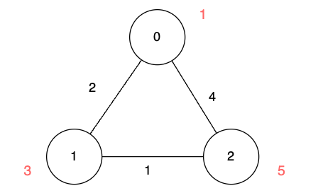

| Category | Difficulty | Likes | Dislikes |
|---|---|---|---|
| Algorithms | Medium | 213 | 23 |
There is an undirected graph of n nodes. You are given a 2D array edges, where edges[i] = [ui, vi, lengthi] describes an edge between node ui and node vi with a traversal time of lengthi units.
Additionally, you are given an array disappear, where disappear[i] denotes the time when the node i disappears from the graph and you won't be able to visit it.
Note that the graph might be disconnected and might contain multiple edges.
Return the array answer, with answer[i] denoting the minimum units of time required to reach node i from node 0. If node i is unreachable from node 0 then answer[i] is -1.
Example 1:
Input: n = 3, edges = [[0,1,2],[1,2,1],[0,2,4]], disappear = [1,1,5]
Output: [0,-1,4]
Explanation:
We are starting our journey from node 0, and our goal is to find the minimum time required to reach each node before it disappears.
edges[0]. Unfortunately, it disappears at that moment, so we won't be able to visit it.edges[2].Example 2:
Input: n = 3, edges = [[0,1,2],[1,2,1],[0,2,4]], disappear = [1,3,5]
Output: [0,2,3]
Explanation:

We are starting our journey from node 0, and our goal is to find the minimum time required to reach each node before it disappears.
edges[0].edges[0] and edges[1].Example 3:
Input: n = 2, edges = [[0,1,1]], disappear = [1,1]
Output: [0,-1]
Explanation:
Exactly when we reach node 1, it disappears.
Constraints:
1 <= n <= 5 * 1040 <= edges.length <= 105edges[i] == [ui, vi, lengthi]0 <= ui, vi <= n - 11 <= lengthi <= 105disappear.length == n1 <= disappear[i] <= 105